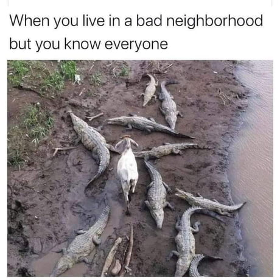

Good day gators

norbelmad:
White kid that grew up a half mile from the Mexican border. My family was usually the one in charge of the block parties so we were chill with the gangs and drug dealers that lived around us. Thinking about this made me nostalgic for the 90s
olimaqui:
@norbelmad fun how if they like you you can actually be safer with them around than away. And like most in high risk jobs they they to party good
jarjarbink:
as i walk through the valley of the shadow of death
oshoryu:
@jarjarbink i hear the Coolio gangstas paradise version in my head
mamnonmam:
When I was doing my masters in Cincinnati, I used to live in a very shady neighborhood it was not considered safe to walk alone outside at night coz people used to get mugged at gun point. I used to catch a bus from work to home and one night it got really late, I was really afraid of walking alone coz my house was located at the end of the street which meant always half mile of walk from the bus stop. Few guys started following me and stopped me after a few blocks, they asked me if I lived there and I was hesitant at first but then started replying to their questions after a few exchanges they invited me to their home for a party and then we became really good friends. Because of them I started talking to a lot of my neighbors and never felt unsafe again.
captainsanic:
@mamnonmam Actually you're safer if you live in a shaddy neighborhood. The shaddy people know you and won't bother you, especially if you always mind your own business.